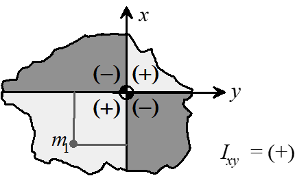
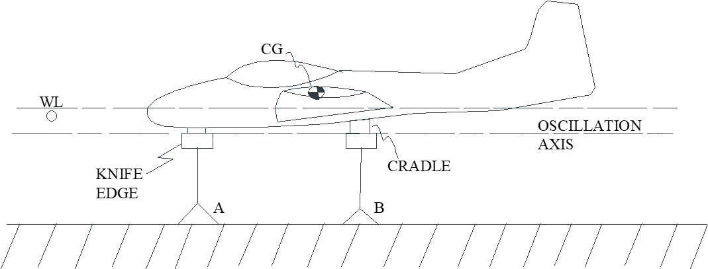

7 Mass Properties
7.1 Abbreviations and Terminology Abbreviations
| Symbol | Definition | Unit |
|---|---|---|
| \(\Delta I_{\mathrm{am}}\) | equivalent moment of inertia contribution of the air | [slug-ft2] |
| \(\Delta I_{\mathrm{te}}\) | correction for test equipment mass | [slug-ft2] |
| \(\delta\) | tilt of spring assembly (measured positive if tilted nose-down relative to local horizontal). | |
| \(\varepsilon\) | inclination of principle axis (positive if tilted down). | |
| \(\omega_d\) | damped frequency of oscillation | [rad/sec] |
| \(\omega_n\) | natural frequency of oscillation | [rad/sec] |
| \(\phi\) | angle between aircraft y-axis and line connecting aircraft \(\mathrm{cg}\) with spring attach points. | |
| \(a\) | perpendicular distance from the spring line of action to the oscillation axis | [ft] |
| \(\mathrm{cg}\) | center of gravity | |
| \(f\) | measured frequency of oscillation | [cycles/sec] |
| \(g\) | Earth’s acceleration due to gravity | |
| \(h\) | vertical component of the perpendicular distance from the \(\mathrm{cg}\) to the oscillation axis. | |
| \(I_{\mathrm{cg}}\) | moment of inertia any axis passing through the \(\mathrm{cg}\) | |
| \(I_{x_b}\) | moment of inertia about aircraft body x-axis | |
| \(I_{xz}\) | product of inertia in aircraft body x-z plane | |
| \(I_{y_b}\) | moment of inertia about aircraft body y-axis | |
| \(I_{z_b}\) | moment of inertia about aircraft body z-axis | |
| \(I_o\) | moment of inertia about oscillation axis | |
| \(K_{\mathrm{tot}}\) | total radius of gyration (includes effect of offset pivot) | |
| \(K_o\) | component of spring stiffness perpendicular to vehicle motion | |
| \(k\) | spring constant | [lb/ft] |
| \(L\) | rolling moment | |
| \(l_{\mathrm{eff}}\) | effective pendulum length | |
| \(m\) | mass | |
| \(\mathrm{MAC}\) | mean aerodynamic chord | |
| \(\mathrm{METO}\) | maximum power (except for takeoff) | |
| \(N\) | yawing moment | |
| \(p\) | roll rate | |
| \(r\) | yaw rate | |
| \(T\) | period of oscillation |
Terminology
| Term | Definition |
|---|---|
| allowable \(\mathrm{cg}\) range | Documented on Type Certificate Data Sheet. May be different for takeoff vs landing. Forward limit usually determined by control power limitations, aft limit usually determined by stability requirements. |
| datum | The manufacturer defined reference plane used for distance calculations. |
| empty weight | Basic aircraft weight with only equipment on board. (without crew, passengers, or fuel). This weight may or may not include oil weight, depending on civil certification date. |
| empty weight \(\mathrm{cg}\) range | The allowable \(\mathrm{cg}\) locations for an empty aircraft. This is defined by the manufacturer to help assure that a normally loaded aircraft will have an acceptable total \(\mathrm{cg}\) location. |
| lateral | Along the aircraft y-axis. |
| longitudinal | Along the aircraft x-axis |
| maximum weight | Maximum allowable weight. Usually implies takeoff weight, but may apply to landing or in-flight weight. conditions after aerial refueling. |
| minimum fuel | A calculated value that represents the minimum amount of fuel any airplane should have while retaining appropriate flight reserves. Calculated as: min fuel [lbs] = \(0.5 \, \mathrm{METO}\) [hp] |
| moment arm | Distance between datum plane and \(\mathrm{cg}\) of object |
| moment | Product of moment arm and force (weight) |
| tare | The bias in weight scales due to test equipment weight or due to scale calibration errors |
| useful load | Maximum takeoff weight minus empty weight |
| weighing point | Location where aircraft is supported during the \(\mathrm{cg}\) measurement. |
7.2 Longitudinal & Lateral Center of Gravity Measurement
Test set-up procedures for empty weight \(\mathrm{cg}\) determination
- Clean aircraft including any mud or water seepage.
- Ensure all aircraft equipment in place.
- Drain to only residual oil (for older aircraft that include only residual oil as part of empty weight calculations) or fill to full oil (newer aircraft include full oil for calculations).
- Drain to residual fuel only.
- Rig all equipment in a closed building to eliminate wind effects.
- Calibrate scales.
- Record tare (bias in scale readings, may be due to wheel chocks, jack stands, or other test equipment)
- Place aircraft on scales and level according to manufacturer’s specifications.
- Measure longitudinal and lateral distances between scale centers and datum. NOTE: distances behind datum are positive, distances ahead of datum are negative.
- Record each scale weight
Calculating longitudinal center of gravity
- Subtract the tare from each scale reading to get the correct weight.
- Multiply each scale’s corrected weight by its distance to the datum. This product is the moment for each scale.
- Sum the moments in step 12.
- Sum the corrected weights.
- Divide the total moment by the total weight,step 13/step 14, to obtain the distance from the datum to the \(\mathrm{cg}\). Some aircraft use this distance for all \(\mathrm{cg}\) references (typically presented in inches).
- Other aircraft refer \(\mathrm{cg}\) location to a percent of the mean aerodynamic chord, \(\mathrm{MAC}\). In this case, subtract the distance between the datum and the leading edge of the \(\mathrm{MAC}\) from the distance in step 15.
- Divide the distance in step 16 by the length of the \(\mathrm{MAC}\). This number is the fraction of the \(\mathrm{cg}\) location along the \(\mathrm{MAC}\).
- To present the above fraction in terms of % \(\mathrm{MAC}\), multiply by 100.
Example \(\mathrm{cg}\) calculations
Example \(\mathrm{cg}\) calculations
Scales read:
- \(320\) lbs @ Nose wheel
- \(816\) lbs @ Right main
- \(810\) lbs @ Left main
Example Using Datum at Main Landing Gear
| Item | Weight | \(\times\) | Arm | \(=\) | Moment |
|---|---|---|---|---|---|
| Right Wheel | \(816\) lbs | \(\times\) | \(0\) in | \(=\) | \(0\) in-lb |
| Left Wheel | \(810\) lbs | \(\times\) | \(0\) in | \(=\) | \(0\) in-lb |
| Nose Wheel | \(320\) lbs | \(\times\) | \(-75\) in | \(=\) | \(-24\,000\) in-lb |
| Total | \(1946\) lbs | \(-24\,000\) in-lb |
\[\frac{-24\,000 \text{ in-lb}}{1946 \text{ lbs}} = 12.33 \text{ in (Forward of Main Wheel Centerline)} \]
Example Using Datum at Prop Spinner
| Item | Weight | \(\times\) | Arm | \(=\) | Moment |
|---|---|---|---|---|---|
| Right Wheel | \(816\) lbs | \(\times\) | \(115\) in | \(=\) | \(93\,840\) in-lb |
| Left Wheel | \(810\) lbs | \(\times\) | \(115\) in | \(=\) | \(93\,150\) in-lb |
| Nose Wheel | \(320\) lbs | \(\times\) | \(40\) in | \(=\) | \(12\,800\) in-lb |
| Total | \(1946\) lbs | \(199\,790\) in-lb |
\[\frac{199\,790 \text{ in-lb}}{1946 \text{ lbs}} = 102.67 \text{ in (Aft of Prop Spinner)} \]
Example Lateral \(\mathrm{cg}\) Calculation
| Item | Weight | \(\times\) | Arm | \(=\) | Moment |
|---|---|---|---|---|---|
| Right Wheel | \(816\) lbs | \(\times\) | \(+70\) in | \(=\) | \(57\,120\) in-lb |
| Left Wheel | \(810\) lbs | \(\times\) | \(-70\) in | \(=\) | \(-56\,700\) in-lb |
| Nose Wheel | \(320\) lbs | \(\times\) | \(0\) in | \(=\) | \(0\) in-lb |
| Total | \(1946\) lbs | \(420\) in-lb |
\[\frac{420 \text{ in-lb}}{1946 \text{ lbs}} = 0.216 \text{ in (Right of Centerline)} \]
Correcting empty weight \(\mathrm{cg}\) for changes in fuel, passengers, equipment or stores.
- Note aircraft empty weight & empty weight \(\mathrm{cg}\). Multiply these values to obtain the empty weight moment.
- Note the weight and moment arm for each item added to or subtracted from the aircraft (items subtracted are listed as negative weights).
- Multiply each item’s weight and arm to determine its moment.
- Sum each item’s moment in step 3 with the aircraft empty weight moment.
- Sum each item’s weight with the aircraft empty weight.
- Calculate the new \(\mathrm{cg}\), step 4/step 5.
Example \(\mathrm{cg}\) corrections
Given aircraft with empty weight = \(1075\) lbs and \(\mathrm{cg}\) @ \(84\) inches. Add pilot (\(170\) lbs @ \(85.5\)“), fuel ( \(75\) lbs @ \(94\)”), and oil (\(15\) lbs @ \(31.7\)").
| Item | Weight | \(\times\) | Arm | \(=\) | Moment |
|---|---|---|---|---|---|
| Airplane(empty) | \(1075\) lbs | \(\times\) | \(84.0\) in | \(=\) | \(90\,300.0\) in-lb |
| Pilot | \(170\) lbs | \(\times\) | \(85.5\) in | \(=\) | \(14\,535.0\) in-lb |
| Fuel | \(75\) lbs | \(\times\) | \(94.0\) in | \(=\) | \(7050.0\) in-lb |
| Oil | \(15\) lbs | \(\times\) | \(31.7\) in | \(=\) | \(475.5\) in-lb |
| Total | \(1335\) lbs | \(112\,360.5\) in-lb |
\[\frac{112\,360.5 \text{ in-lb}}{1335 \text{ lbs}} = 84.16 \text{ in} \]
Given aircraft with empty weight = \(1220\) lbs and \(\mathrm{cg}\) @ 25 inches. Add radio (\(15\) lbs @ \(65\)“), and replace \(11\) lb generator with \(14\) lb generator at same \(21.5\)” location (in front of datum-located on firewall).
| Item | Weight | \(\times\) | Arm | \(=\) | Moment |
|---|---|---|---|---|---|
| Airplane(empty) | \(1220\) lbs | \(\times\) | \(25.0\) in | \(=\) | \(30\,500.0\) in-lb |
| Pilot | \(15\) lbs | \(\times\) | \(65.0\) in | \(=\) | \(975.0\) in-lb |
| Generator(removed) | \(-11\) lbs | \(\times\) | \(-21.5\) in | \(=\) | \(236.5\) in-lb |
| Generator(installed) | \(+14\) lbs | \(\times\) | \(-21.5\) in | \(=\) | \(-294.0\) in-lb |
| Total | \(1238\) lbs | \(31\,417.5\) in-lb |
\[\frac{31\,417.5 \text{ in-lb}}{1238 \text{ lbs}} = 25.38 \text{ in} \]
7.3 Vertical Center of Gravity Measurement
- Drain or block landing gear struts to keep distances \(G\), \(J\), and \(V\) constant.
- Level the fuselage and measure the weight on the nose wheel (\(F_o\)).
- Tilt the aircraft at various (\(\theta\)) measure nose wheel weight (\(F\)).

The change in nose wheel force can be written as
\[ F_0 - F = \left[ V + \frac{B G}{C} \right] \left( \frac{W}{C \cot \theta + G} \right)\]
- Plot (\(F_o-F\)) vs the term in parenthesis.
- Slope of line equals term in brackets.
- Solve for \(V\) after measuring \(B\), \(C\), \(G\), and the slope.
- This method applies to “gear down” \(\mathrm{cg}\).
- For “gear up” add the manufacturer’s prediction of the \(\mathrm{cg}\) shift to this result.
7.4 Moment & Product of Inertia Measurement
The moment of inertia about any axis of a body is the summation of the product of every element’s mass and distance squared. Moments of inertia represent the resistance to rotational momentum changes.

\[\begin{align} I_{x_b} &\equiv \int \left( y^2 + z^2 \right) dm \\ I_{y_b} &\equiv \int \left( x^2 + z^2 \right) dm \\ I_{z_b} &\equiv \int \left( x^2 + y^2 \right) dm \\ \end{align}\]
Products of inertia are also calculated about any body axes. They represent the symmetry of mass distribution (comparing opposing quadrants).

\[\begin{align} I_{xy} &= I_{yx} \equiv \int xy dm \\ I_{yz} &= I_{zy} \equiv \int yz dm \\ I_{zx} &= I_{xz} \equiv \int zx dm \\ \end{align}\]
- Aircraft moments and products of inertia are calculated using body axes as the reference system.
- Careful documentation can yield inertial predictions within about 1-5% of actual.

7.4.1 Radius of Gyration
- Dimensions of all \(I\) terms are [slugs-ft2]
- Aircraft moments & products of inertia are generally assumed to be constant.
- For moments of inertia, mathematically replace \(I\) with the product of total mass times some constant with the dimensions of square feet.
- This constant is called the “radius of gyration” (\(k\)).
- If all the mass were concentrated at this radius, it would have the same moment of inertia as the actual body.
\[ I_x \equiv \int \left( y^2 + z^2 \right) dm = mk^2_{yz} \]
Aircraft moment of inertia summary
\(I_{z_b}\) is always the largest value.
\(I_{y_b} > I_{x_b}\) for fuselage-loaded aircraft.
\(I_{x_b} > I_{y_b}\ \)for wing-loaded aircraft.

- Vehicle mass distribution can be represented with concentrated “dumbbell” masses.
- The lines connecting the opposing dumbbells are the principle axes.
- When the principle axis lies along some line different from the body axis, the products of inertia are non-zero.
- If the orientation of the principle axes and the moments of inertia about theses axes are known, then the moments of inertia about any other axis system can be calculated.
7.4.2 Parallel Axis Theorem Applications
Shows how to determine modified moment of inertia after some component alterations.
Example: Correct original aircraft roll inertia, \(I_{x_b}\), to a modified value that accounts for the addition of wingtip fuel tanks.
\[ I_{x_{b_{\text{mod}}}} = I_{x_{b_{\text{orig}}}} + \Delta I_{x_{\text{comp}}} \]
* \(\Delta I_{x_{\text{comp}}}\) is composed of two components
\[ \Delta I_{x_{\text{comp}}} = I_{x_{\text{comp}}} + m_{\text{comp}} r^2 \]
- \(I_{x_{\text{comp}}}\) is the moment of inertia of just the new component about an axis which is parallel to the aircraft axis in question (this axis should run through the component’s \(\mathrm{cg}\)).
- \(I_{x_{\text{comp}}}\) can be determined analytically by summing the inertias of every mass element throughout the component (documented for simple shapes in various engineering handbooks).
- \(I_{x_{\text{comp}}}\) can be determined experimentally by “swinging.” (Swing Method)
- \(I_{x_{\text{comp}}}\) is usually much smaller than \(m_{\text{comp}} r^2\) and can often be omitted.
- \(m_{\text{comp}}\) is the component’s mass
- \(r\) is the distance from the axis in question to the component’s \(\mathrm{cg}\).
Similarly, the parallel axis theorem shows how to determine modified products of inertia after some component alterations.
\[ I_{xz_{\text{mod}}} = I_{xz_{\text{orig}}} + \left[ I_{xz_{\text{comp}}} + m_{\text{comp}} xz \right] \]
\(x\) and \(z\) are the distances from the component \(\mathrm{cg}\) to the reference axes.
Moments of inertia are calculated about a set of reference axes which all intersect at the reference \(\mathrm{cg}\). In general, however, the actual \(\mathrm{cg}\) does not lie exactly at this reference \(cg\). The parallel axis theorem shows how to correct the moment of inertia to the actual \(\mathrm{cg}\) axis. As an example, the rolling moment of inertia about the actual \(\mathrm{cg}\) ( \(I_{x_{\mathrm{cg}}}\) ) is calculated from the reference \(I_{x_b}\) as follows.
\[ I_{x_{\mathrm{cg}}} = I_{x_b} - m \left[ y^2 + z^2 \right] \]
where
- \(m\) = total mass
- \(y\) = lateral distance between \(\mathrm{cg}\) and aircraft x-axis.
- \(z\) = vertical distance between \(\mathrm{cg}\) and aircraft x-axis.
7.4.3 Measuring Roll Inertia, \(I_{x_b}\) (spring oscillation method)
- Balance aircraft on prism-like “knife edges” that support wooden cradles that conform to aircraft shape.
- Attach springs (tension springs illustrated here) so they are parallel to line \(a\) as shown.


- Allow aircraft to oscillate freely in roll after a small disturbance.
- Use automatic recording to determine period of oscillations (\(T\)).
- Calculate damped frequency as
\[ \omega_d = \frac{2\pi}{T} \]
- Record peak magnitude of each oscillation.
- Calculate \(\zeta\) using transient peak ratio method (see [Motion and Vibration Analysis]).
- Calculate natural frequency as
\[ \omega_n = \frac{\omega_d}{\sqrt{1 - \zeta^2}} \]
- Measure the spring’s stiffness (\(K_0\))
- Calculate inertia about oscillation axis (\(I_0\)) as
\[ I_o = \frac{K_o}{\omega_n^2} \]
- Use parallel axis theorem to correct \(I_o\) to a parallel axis passing through the \(cg\).
- Springs, cradles and attachments hardware will change the moment of inertia. Sum their total into a combined “test equipment inertia” (\(I_{\mathrm{te}}\)) and subtract this from the above result.
Combining steps 10-12 gives the complete moment of inertia equation
\[ I_{\mathrm{cg}} = \frac{K_o a^2 - mgh}{\omega_n^2} - md^2 - \Delta I_{\mathrm{te}} \]
where \(h\) is the vertical distance between the \(\mathrm{cg}\) and axis of oscillation and \(d\) is the total distance between the \(\mathrm{cg}\) and the axis of oscillation (\(d\) = \(h\) in the illustrated roll inertia test setup).
If automatic recording is not available...
Accomplish steps 1-3 as described for automatic recording case.
- Use a stopwatch to time several oscillations and calculate \(\omega_d\) as before
- Measure the spring’s rotational stiffness (\(K_o\))
- Approximate inertia using the damped frequency using
\[ I_o \approx \frac{K_o}{\omega_d^2} \]
- Use parallel axis theorem to correct \(I_o\) to a parallel axis passing through the \(cg\).
- Correct for effects of test hardware moment of inertia (\(\Delta I_{\mathrm{te}}\)).
- To correct for errors in the \(I_o\) approximation, apply an "additional mass correction" (\(\Delta I_{\mathrm{am}}\)) which equates the flate plate area damping effect to additional inertia. This correction is detailed in ref. 7.5.3.
Combining steps 6-9 gives
\[ I_{\mathrm{cg}} = \frac{K_o a^2 - mgh}{\omega_d^2} - md^2 - \left(\Delta I_{\mathrm{te}} + \Delta I_{\mathrm{am}} \right) \]
Above methods can also be used to determine \(I_{y_b}\) and \(I_{z_b}\)
7.4.4 Measuring Pitch Inertia, \(I_{y_b}\) (spring oscillation method)
- Balance aircraft on knife edges as shown.
- Attach spring perpendicular to line \(a\). Only one spring is required since the aircraft \(\mathrm{cg}\) is off-center. Spring must be stiff enough to hold the aircraft in equilibrium as well as provide a restoring moment during oscillations.


Repeat steps 3-12 and apply the moment of inertia equation to determine \(I_{y_b}\)
\[ I_{\mathrm{cg}} = \frac{K_o a^2 - mgh}{\omega_n^2} - md^2 - \Delta I_{\mathrm{te}} \]
or, for an uninstrumented aircraft,
\[ I_{\mathrm{cg}} = \frac{K_o a^2 - mgh}{\omega_d^2} - md^2 - \left(\Delta I_{\mathrm{te}} + \Delta I_{\mathrm{am}} \right) \]
7.4.5 Measuring Yaw Inertia, \(I_{z_b}\) (spring oscillation method)
- Suspend aircraft as shown: fuselage reference line parallel with floor, \(z\)-body axis coincides with the oscillation axis (\(h = d = 0\)). For \(I_{z_b}\) test, set spring assembly tilt angle parallel to floor (\(\delta = 0\)).

- Ideal case is where the wing attach points are in line with the aircraft \(\mathrm{cg}\) as shown. Springs are perpendicular to the AB line and are parallel.

If not possible to rig wing attach points in line with the \(\mathrm{cg}\), then keep the springs parallel to each other and measure the angle \(\phi\).
• Calculate \(K_o = k \cos{\phi}\), where \(k\) is the actual spring constant

Repeat steps 3-12 and apply the moment of inertia equation to determine \(I_{z_b}\). Note that distances \(h\) and \(d\) are zero for a properly suspended aircraft.
\[ I_{\mathrm{cg}} = \frac{K_o a^2 - mgh}{\omega_n^2} - md^2 - \Delta I_{\mathrm{te}} \]
or, for an uninstrumented aircraft,
\[ I_{\mathrm{cg}} = \frac{K_o a^2 - mgh}{\omega_d^2} - md^2 - \left(\Delta I_{\mathrm{te}} + \Delta I_{\mathrm{am}} \right) \]
7.4.6 Measuring Axis of Inclination and \(I_{xz}\)
- Inclination of principle axis (\(\varepsilon\)) is positive if it lies in the \(+xz\) plane as shown.
- \(I_{xz}\) positive if \(\varepsilon\) is positive.

- From equations of motion
[ \[\begin{align} L &= I_x \dot{p} - I_{xz} \left( \dot{r} + pq \right) + \left( I_z - I_y \right) qr \text{and} \\ N &= I_z \dot{r} - I_{xz} \left( \dot{p} - qr \right) + \left( I_y - I_x \right) pq \\ \end{align}\]
- When forcing small motions about only the yaw axis, \(pq\) and \(qr\) are negligible, giving
[ \[\begin{align} L &= I_x \dot{p} - I_{xz} \dot{r} \text{and} \\ N &= I_z \dot{r} - I_{xz} \dot{p} \\ \end{align}\]
- If \(\varepsilon\) (and therefore \(I_{xz}\)) is positive, then yawing to the right will generate a left rolling moment.
- If \(\varepsilon\) and \(I_{xz}\) are negative, a right yaw will generate a right moment.
- Determine \(I_{xz}\) and \(\varepsilon\) by repeating yaw experiment for different spring angles (\(\delta\)). Use instrumentation to note for each \(\delta\).
- Graphically determine the angle \(\delta_0\) at which the restoring vector produced by the springs completely counteracts the roll motion.
Plot \(\tan{\delta}\) vs \(\frac{\dot{p}}{\dot{r}}\) as shown.
- Determine the point where \(\frac{\dot{p}}{\dot{r}}\) equals zero. This occurs at \(\tan{\delta_0}\).
- Calculate the product of inertia using
\[ I_{xz} = I_z \tan{\delta_0} \]
- Calculate the inclination of the principle axis using
\[ \tan{2\varepsilon} = \frac{2I_{xz}}{I_{z_b} - I_{x_b}} \]
Note: Since the \(I_{xz}\) test objective is to interpolate to a condition where \(\frac{\dot{p}}{\dot{r}}\) equals zero, only the ratio is necessary and the absolute magnitudes of the accelerations are not required. In other words, the roll acceleration sensitivity can be increased to allow for easier measurement of the ratio.
7.4.7 Guidelines for Spring Oscillation Method
- Use only small magnitude oscillations.
- Keep size and radius of knife edges as small as practical.
- Springs are typically linear except around zero load. Best results occur if springs are pre-loaded.
- Choose spring stiffness so oscillation frequency will be within instrumentation limits.
- If using a hand recorded stopwatch, best spring stiffness gives about one cycle per second (\(f = 1\)).
- Estimate the desired spring rate using
\[ k = \frac{ \left( I_{\mathrm{cg}} + md^2 \right) \left( 2 \pi f \right)^2 + hmg}{a^2} \]
- The purpose of instrumentation is to provide a means for measuring frequency and magnitude. Any of several parameters will be sufficient, including angular displacement, rate or acceleration, or linear acceleration.
7.4.8 Swing Method
- Suspend component as shown.
- Measure pendulum length (\(l\)), component mass (\(m\) ), and the period of oscillation (\(T\)).
- The observed period is a function of the effective pendulum length.
\[ \omega = \sqrt{\frac{g}{l_{\mathrm{eff}}}} \;\;\;\;\text{and}\;\;\;\; T = \frac{2 \pi}{\omega} = 2 \pi \sqrt{\frac{l_{\mathrm{eff}}}{g}} \;\;\;\;\text{or}\;\;\;\; l_{\mathrm{eff}} = \left( \frac{T}{2 \pi} \right)^2 g \]
- This effective length is the total radius of gyration \(l_{\mathrm{eff}} = K_{\mathrm{tot}}\)
- The total moment of inertia about the pivot point is the product of mass and radius of gyration squared. The parallel axis theorem states that this also is the sum of the component’s moment of inertia about its \(\mathrm{cg}\) plus its mass times the distance between the pivot and the component’s \(\mathrm{cg}\).
\[ I_{\mathrm{eff}} = m K_{\mathrm{tot}}^2 = I_{\mathrm{cg}} + ml^2 \]
- Solving for the component’s moment of inertia about its own \(\mathrm{cg}\) gives
\[ I_{\mathrm{cg}} = m K_{\mathrm{tot}}^2 - ml^2 = m \left( K_{\mathrm{tot}}^2 - l^2 \right) = m \left( \left[ \left( \frac{T}{2 \pi} \right)^2 g \right]^2 - l^2 \right) \]
7.5 References
| 7.5.1 | Lawless, Alan R. et al, “Special Topics and Aircraft Subsystems Flight Testing,” Chapter 1, Mass Properties, National Test Pilot School, Mojave, CA, 1999. |
| 7.5.2 | Bradfield, Edward N., “Experimental Determination of the Moments of Inertia, Product of Inertia, and Inclination of the Principle Axis of Conventional Aircraft by the Spring Oscillation Method” FTC-TIM-1001, AFFTC, Edwards AFB, CA, 1971. |
| 7.5.3 | Malvestuto, S. F., et al, “Formulas for Additional Mass Corrections to the Moments of Inertia of Airplanes” TN 1187, Langley Memorial Aeronautical Laboratory, Langley Field Virginia, 1947. |
| 7.5.4 | Lawless, Alan R., “Fixed Wing Flying Qualities Flight Testing” Chapter 7, Equations of Motion, National Test Pilot School Mojave CA, 1998. |
Additional Reading
| 7.5.5 | Tanner H.L., “Measurement of the Moments of Inertia of an Airplane by a Simplified Method” NACA2201, Ames Aeronautical Laboratory, Moffet Field, CA, 1950. |
| 7.5.6 | Woodward, C.R., et al “Handbook of Instructions for Experimentally Determining the Moments of Inertia of Aircraft by the Spring Oscillation Method” TB-822-F-2, ASTIA AD97104, Cornell Aeronautical Laboratory, Buffalo, New York, 1955. |